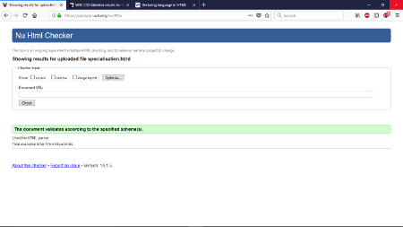
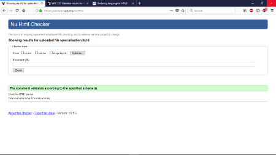

Learning web development during the first term
When I began the first term at Northampton University and beagn taking web design, I had almost next to no experience within this subject.
With each lecture that I attended with my tutor Liz, I found that my enjoyment for the subject grew. I had found a new interest that I did not have
before and one that I felt I would never have. With the extra work that I did outside of lectures like the extra reading and researching other websites,
I discovered that my knowledge had grown rather rapidly. Experimenting with different ideas and different designs I quickly became a customed to the
language HTML and also CSS. Other key factors that I found to increase my understanding of web desin was the members of my team. My team
members would help with any problems that I came across, and would discuss them if any of them did not know the answer to. Having friends to bounce ideas
off would be a major benefactor to how my website looks today. Many occasions I found that each member would speak of a specific problem and we all help to solve.
We as a team use to spend many hours within the library working with each to complete our website / project. With the knowledge I now have I really do hope
that I am able to expand even further, with future lectures that I will have and also the new topic of javascript.
Some of the things that I feel I have learned I would like to outline them here. First I have learnt how HTML and CSS have changed of the many years
since the internet has been created, so the history or the back story so to speak. From there my knowledge on the different type of software available to use to
help create a smooth experince in writting code, my prefered choice has now become VisualCode as I once use to use Thimble. Thimble I found did not cater fully
to the needs that myself needed to achieve. Then through lectures and reading of easy steps books curtesy of Mike Mcgrath, I began writing some of my own code in
HTML and also CSS. It was from here with a lot of trial and error I started learning some of the basic knowledge on how websites functioned and maintained.

 

As per the criteria the images show the use of validators on from the W3c website. These images show that for each HTML page the validator has confirmed that there is no errors being flagged. The same is also said for my CSS page where there are also no errors. The use of validators are extremely important for web design, they make sure that the user gets the full smooth experience with no errors while having access to the website.